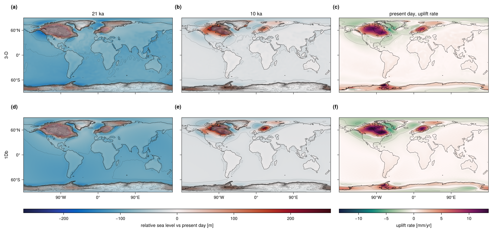
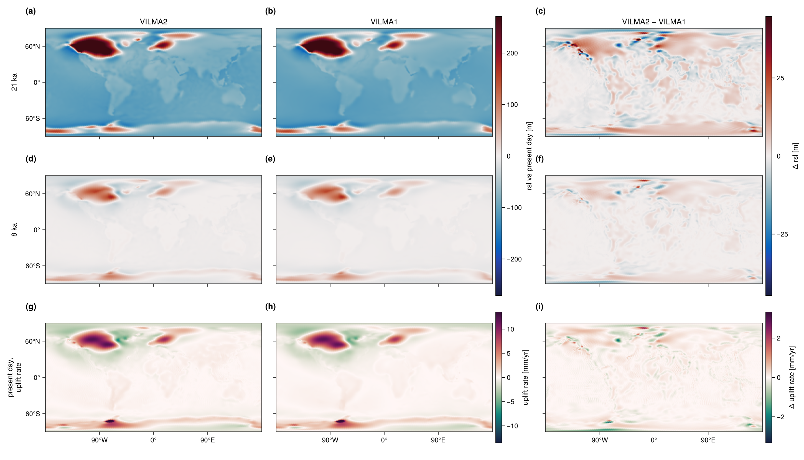
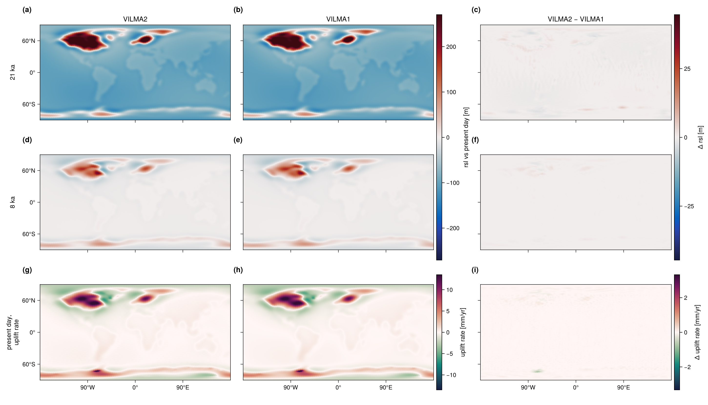
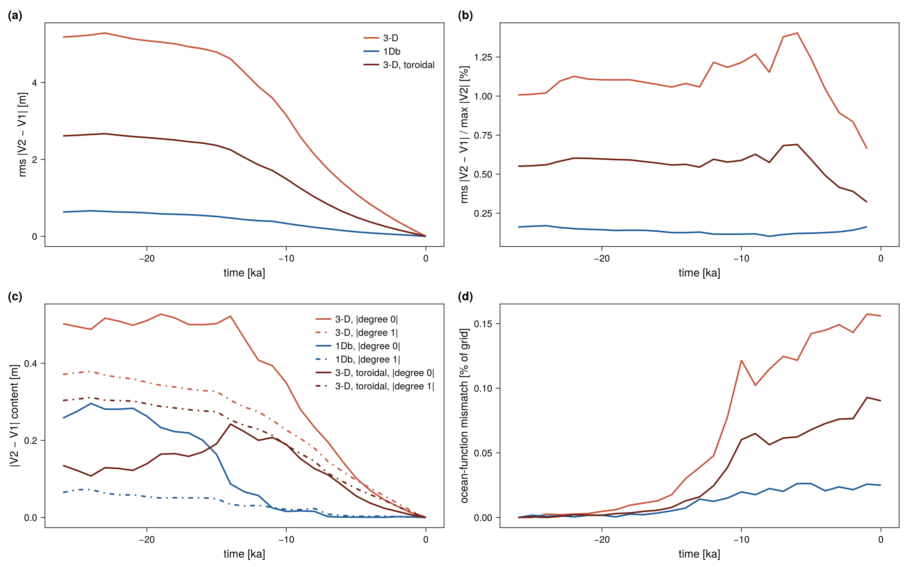
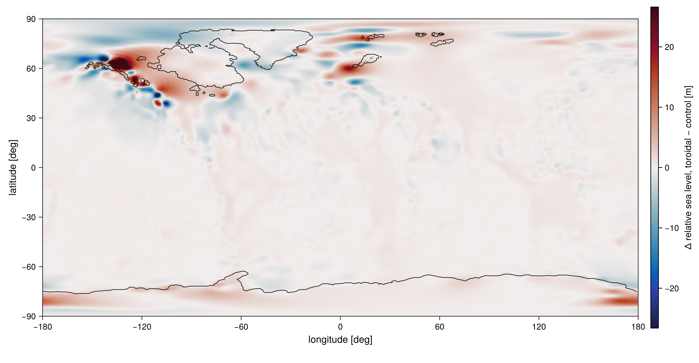

Deglaciation: VILMA1 versus VILMA2
This page compares VILMA2 with VILMA1 on the last deglaciation. Both solvers run behind the same driver, so they share the ice forcing, the remap, the reference state, the output grid and the output file layout. The comparison is a change of one namelist key, solver = "v2" or solver = "v1". It tests the complete model at production resolution: the visco-elastic response with 3-D viscosity, the sea-level equation with migrating coastlines, and the rotational feedback.
It is a code-to-code comparison, not a comparison with a reference solution. Agreement shows that the two codes solve the same problem in the same way. It does not bound the error that both codes share.
Experiment design
The settings below are common to both solvers unless stated. They are set in validation/experiments/nml/blockD.nml.tmpl and blockDV1.nml.tmpl.
| item | setting |
|---|---|
| Ice forcing | GLAC-1D ice thickness, input/geo_ice_glac1d_deglac.nc, 26 ka to present, 261 slices every 100 yr |
| Ice density | 931 kg m⁻³ (the value of the earlier reference results; the model default is 917) |
| Coupling and output grid | \(\ell_\max = 170\), Gauss grid of VILMA2 |
| VILMA1 internal grid | vilma_v1_jmax = 170, 512 × 256 |
| Reference state | i_eq = 2, VILMA2’s LGM reference state, the same file for both solvers |
| Viscosity, case 3-D | the field of Bagge et al. (2021) on longitude, latitude and radius, with VILMA2’s clamp applied (\(10^{19.5}\) to \(10^{30}\) Pa s) |
| Viscosity, case 1Db | the radial mean of that field (the geometric mean per level) |
| Degree-1 frame | center of mass in both (deg1_frame = "cm") |
| Radial elastic structure | PREM geometry in 11 layers, VILMA2’s layer table, also given to VILMA1 |
| Radial mesh | the 5/10/40 km element spacing of VEGA in both. VILMA2: 220 elements including the fluid core (mesh_depth = 80e3, 670e3), 82 of them 3-D. VILMA1: 128 mantle and lithosphere elements, from a densi.inp written from VILMA2’s layer table |
| Ice and water density | VILMA2’s values, also written to VILMA1’s load file |
| Rotation | on in both |
| Coastlines | migrating, with the subgrid (water-column) ocean load |
| VILMA2 time stepping | scheme = "fe", equal sub-steps at the Maxwell stability limit within the 100 yr interval |
| VILMA1 time stepping | vilma_v1_nsub = 12 uniform sub-steps of 8.33 yr |
| Toroidal field | off (l_toroidal = .false.), the model default when these runs were made; one extra 3-D run with it on (now the default) |
Reference state. The reference is built once, by VILMA2 with the 3-D viscosity. The 26 ka ice load is held for 30 kyr from rest (equil_time_max = 30000, equil_rate_tol = 0, no 1-D pre-spin-up, lid rule off). The result is not an equilibrium, because the stiffest parts of the viscosity field keep relaxing. The fixed duration makes the state reproducible. Both solvers start from this state, so the load anomaly is zero at the start for both. VILMA1 requires this: it starts with zero load anomaly and zero viscous memory. Neither solver runs a spin-up in the comparison itself (equil_time_max = 0, pre_spinup_1d = .false.).
Viscosity. VILMA1 reads its viscosity file directly and applies no clamp of its own. The file it reads is therefore written from VILMA2’s clamped field, on the 128 radial elements that VILMA1 uses. VILMA1 maps the file’s levels onto its elements by index, not by radius, so the staging script checks that the file has one level per element. The 1Db case uses the radial mean of the same field in both solvers, so the 3-D and 1Db cases differ only by the lateral variation.
VILMA1 sub-steps. VILMA1 does not sub-step by itself, and it stops if the step exceeds its Maxwell limit. The limit measured for this structure is 11.0 yr, which gives 12 sub-steps per 100 yr interval.
Shared diagnostics. The ocean function C_ocean and the barystatic sea level bsl are computed by VILMA2’s routines from the state of each solver. They are not independent between the two solvers.
The experiment

The ocean-mean relative sea level at present day, relative to the reference state, is 96.90 m (3-D) and 97.06 m (1Db). This is 102.9 % and 103.2 % of the above-flotation volume of the reference ice that is lost, 94.21 m and 94.08 m in barystatic metres, both rebuilt from the run’s own output. The lateral viscosity changes relative sea level by 17.2 m RMS at 21 ka (3-D minus 1Db, at most 249 m) and the present-day uplift rate by 0.63 mm/yr RMS (at most 24.2 mm/yr).
Results
Relative sea level (RSL) is taken relative to each run’s own present day. The difference is VILMA2 minus VILMA1. All statistics are over the global grid. The difference is therefore zero at present day by construction, and present day is covered by the uplift rate instead.
| time | RMS [m] | max |Δ| [m] | 99th pct [m] | VILMA2 signal max [m] | RMS / signal | deg 0 [m] | |deg 1| [m] | RMS after deg 0+1 [m] |
|---|---|---|---|---|---|---|---|---|
| 21 ka | 5.138 | 87.664 | 18.016 | 463.3 | 1.11e-02 | 0.50 | 0.36 | 5.120 |
| 14 ka | 4.618 | 91.394 | 16.772 | 427.4 | 1.08e-02 | 0.52 | 0.30 | 4.593 |
| 8 ka | 2.131 | 32.929 | 8.019 | 185.0 | 1.15e-02 | 0.23 | 0.18 | 2.122 |
| 2 ka | 0.382 | 6.012 | 1.494 | 45.8 | 8.35e-03 | 0.03 | 0.04 | 0.382 |
| time | RMS [m] | max |Δ| [m] | 99th pct [m] | VILMA2 signal max [m] | RMS / signal | deg 0 [m] | |deg 1| [m] | RMS after deg 0+1 [m] |
|---|---|---|---|---|---|---|---|---|
| 21 ka | 0.626 | 6.276 | 1.811 | 425.5 | 1.47e-03 | -0.28 | 0.06 | 0.557 |
| 14 ka | 0.477 | 4.135 | 1.825 | 379.0 | 1.26e-03 | -0.09 | 0.03 | 0.467 |
| 8 ka | 0.235 | 3.191 | 1.011 | 229.4 | 1.02e-03 | -0.02 | 0.02 | 0.233 |
| 2 ka | 0.045 | 0.703 | 0.181 | 31.6 | 1.42e-03 | 0.00 | 0.00 | 0.045 |
With the radial-mean viscosity the two codes agree to 0.2 % of the RSL signal throughout; the RMS difference is at most 0.66 m (24 ka). With the 3-D viscosity they agree to 1.4 % at most; the RMS difference peaks at 5.29 m (23 ka). The degree-0 and degree-1 parts of the difference stay at or below about 0.5 m in both pairs, and removing them changes the RMS by less than 0.07 m.
| quantity | 3-D | 1Db |
|---|---|---|
| Present-day uplift rate, RMS difference [mm/yr] | 0.1832 | 0.0296 |
| Present-day uplift rate, max difference [mm/yr] | 2.7464 | 0.8907 |
| Present-day uplift rate, 99th pct difference [mm/yr] | 0.7140 | 0.0915 |
| Present-day uplift rate, VILMA2 signal max [mm/yr] | 38.36 | 15.54 |
| Present-day uplift rate, RMS / signal | 4.78e-03 | 1.91e-03 |
| Barystatic sea level, max difference over the run [m] | 0.367 | 0.238 |
| Barystatic sea level, difference at present day [m] | 0.349 | 0.232 |
| Ocean-mean RSL at present day, VILMA2 [m] | 96.90 | 97.06 |
| Ocean-mean RSL at present day, VILMA1 [m] | 96.55 | 96.83 |
| Ocean-mean RSL at present day, difference [m] | 0.35 | 0.23 |
| time | 3-D: cells differing | 3-D: % of grid | 1Db: cells differing | 1Db: % of grid |
|---|---|---|---|---|
| 21 ka | 7 | 0.003 | 4 | 0.002 |
| 14 ka | 70 | 0.030 | 17 | 0.007 |
| 8 ka | 267 | 0.115 | 52 | 0.022 |
| 2 ka | 333 | 0.143 | 50 | 0.021 |
| 0 ka | 363 | 0.156 | 58 | 0.025 |
For scale, the lateral-viscosity signal within VILMA2 (3-D minus 1Db: 17.2 m RMS at 21 ka, 15.0 m at 14 ka, 6.2 m at 8 ka) is three times the difference between the codes with the 3-D viscosity, and about thirty times the difference with the 1Db viscosity.
Figures



The two maps figures use a separate color scale for the difference column. On the scale of the model columns, the difference would not be visible. The summary figure shows the difference through time, and its panel (c) is the check that the degree-1 frame is matched.
Sources of difference
1. Load path within a coupling interval
The two solvers reach the same load at the end of each 100 yr interval by different paths. VILMA2 ramps the load linearly across the interval and takes equal sub-steps at its own Maxwell stability limit. VILMA1 holds the load at the value of the interval and takes 12 uniform sub-steps of 8.33 yr. The difference is first order in the coupling interval. Its size has not been measured in isolation. An earlier test bounds the sub-step part alone: with 24 and 48 sub-steps, VILMA1’s result changed by 0.006 m.
2. Radial discretisation and lateral viscosity
The two codes integrate the same viscosity field and the same elastic layer table on their own radial element grids, with the same target spacing but not the same nodes: VILMA2 spreads the elements of a layer evenly, VILMA1 truncates each layer to whole elements. With lateral variation, each code also carries it in its own way; VILMA2 treats only the elements whose lateral spread exceeds visc3d_tol = 1e-3 as 3-D (82 of 220). The lateral variation is the only difference between the 3-D and the 1Db pair, and the 3-D pair differs about eight times more. About half of that is the toroidal field, which VILMA1 carries and these VILMA2 runs did not (next section). The residual without the toroidal field of the 3-D pair is not a low-degree pattern: at 21 ka the largest single part up to degree 8 is degree 6, order 2, at 0.70 m of an area-weighted RMS of 4.08 m, so most of it lies above degree 8. The maps place it along the margins of the ice sheets and the steep viscosity gradients of the cratonic keels.
3. Toroidal field
Lateral viscosity drives toroidal flow. VILMA1 includes it; VILMA2 includes it only with l_toroidal = .true., which was off by default when these runs were made and is on by default since. A third VILMA2 run, identical to the 3-D run but for l_toroidal = .true., measures both its effect and how much of the 3-D residual it explains (validation/tables/toroidal.md, v2v1.md).
| quantity | toroidal off | toroidal on |
|---|---|---|
| V2 − V1 RMS of RSL at 21 ka [m] | 5.14 | 2.60 |
| V2 − V1 RMS of RSL at 14 ka [m] | 4.62 | 2.25 |
| V2 − V1 RMS of RSL at 8 ka [m] | 2.13 | 1.03 |
| V2 − V1 RMS of present-day uplift rate [mm/yr] | 0.183 | 0.096 |
| Ocean-mean RSL at present day, VILMA2 [m] | 96.90 | 96.84 |
| Budget closure, delivered / target [%] | 102.86 | 102.82 |
| Wall time per kyr of deglaciation [min] (64 threads) | 1.82 | 2.67 |
With the toroidal field on, the difference between the codes halves at every time. The field itself changes RSL, measured against the LGM reference, by 0.6 m RMS at 21 ka, 2.1 m at 10 ka and 3.0 m at present day, and by up to 92 m locally at 10 ka, around the margins of the Cordilleran, Laurentide and Fennoscandian ice sheets (Figure 5). It changes the present-day uplift rate by 0.10 mm/yr RMS and up to 2.6 mm/yr, and the ocean-mean sea level by 0.06 m. It costs a factor of 1.47 in run time.

4. Degree-1 frame
The two codes must report RSL in the same degree-1 frame. VILMA1 works in the center-of-mass frame and carries geocenter motion in its RSL. With deg1_frame = "cm" in VILMA2 the frames are matched; panel (c) of Figure 4 shows the degree-1 part of the difference stays below 0.38 m (3-D) and 0.08 m (1Db). Unmatched, degree 1 was about half of the difference in this experiment and 98 to 99.7 % of it in a disc-load test.
5. Rotational feedback (resolved)
Earlier passes (model 907bc74) were dominated by one pattern of degree 2 and order 1, the pattern of the rotational feedback. Three fixes to VILMA2’s rotation (304f4cb: the sign of the centrifugal potential, the viscosity of the relaxation, and the coupling of the rotation within the step) removed it.
| pair | RMS [m] | degree-2, order-1 part [m] | RMS after removing it [m] |
|---|---|---|---|
| 3-D, now | 4.08 | 0.50 | 4.05 |
| 1Db, now | 0.59 | 0.37 | 0.45 |
| 3-D, 907bc74 | 8.91 | 7.74 | 4.41 |
| 1Db, 907bc74 | 7.93 | 7.86 | 1.04 |
VILMA1 does not write its polar motion through this driver, so the two codes are not compared on polar motion here. VILMA2’s polar motion over the run is between −2.1e-3 and 2.3e-4 (dimensionless, both components, both structures).
How to reproduce
The experiment pipeline lives in the repository’s validation/ directory. It stages the forcing, the reference state and the matched viscosity files, runs both solvers, reduces their output, and writes the tables (validation/tables/) and the figures on this page. validation/RESULTS.md records the model commit and the jobs of each pass.
cd validation
./run.sh build # model, benchmark drivers, VILMA1-backend binary
./run.sh ref # LGM reference state
./run.sh submit prep # export the reference, write the shared viscosity files
./run.sh D V1 # VILMA2 and VILMA1, 3-D and 1Db
./run.sh submit reduce analyseThe VILMA1 runs need a build with vilma_v1=1 and a VILMA1 install. VILMA1 is a precompiled library and is not a dependency of the default build. The build, the namelist keys and the constraints are described in doc/vilma-v1-backend.md. examples/deglac_vilma_v1.nml is a low-resolution template for the backend. It is not the configuration of this page.